A drawing by Samia A. Halaby
Please read this scroll from right to left. These pictures are of a continuous drawing which filled a scroll that is 72 feet long. It records the stone sculptor, Mona Saudi, in her home and working in her studio. It was painted in 1997 in Amman by Palestinian artists Samia A. Halaby to document her admiration and friendship with the sculptor.
1..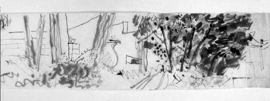
"After entering the gate on the right are some wonderful dark green trees.
2..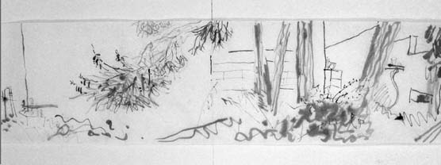
There are large antique urns which Mona Saudi has collected and placed between the trees.
3..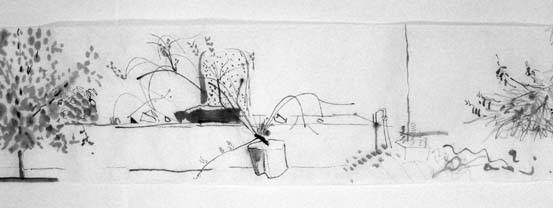
Through the dark green trees and up some terraces to the narrow back garden, I walk and draw with wash and brush.
4..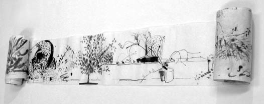
Here I find more antiques. A collection of stones and potted plants speaks of her love affair with stone.
5..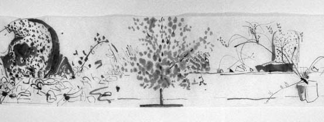
Each friend of Mona's has adopted a tree. Mine is the little lemon tree which produces profusely. It is a beautiful teenaged tree.
6..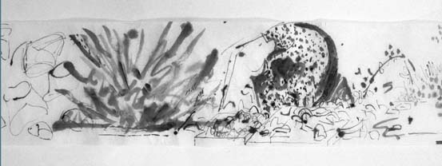
This is a huge antique grinding stone in Saudi's collection.
7..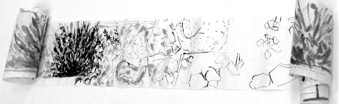
Found and favored stones are arranged in all parts of the garden -- in the flower beds and on the stone surfaces.
8..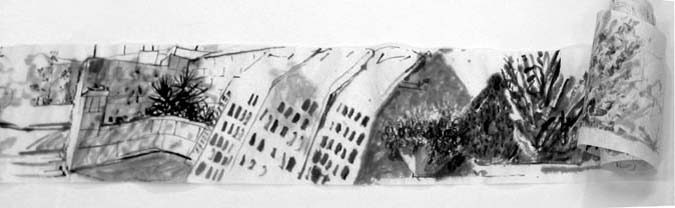
More of the antiques and more flower pots line the garden.
9..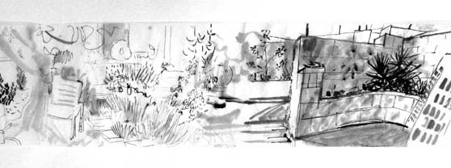
From the Back narrow patio-like garden, my brush jumps to the front garden. There even more found stones line each part of the garden.
10..
As I draw just in front of the main entrance, Saudi sits to read her morning paper under the two fig trees -- my favorite spot -- and I continued drawing my scroll.
11..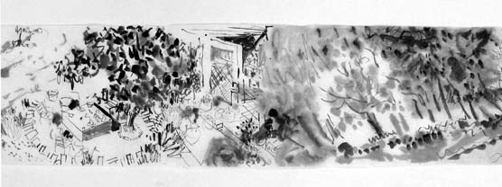
Further down into the garden there are many trees each of which has been claimed by a friend. A small fig tree is surrounded by stones
12..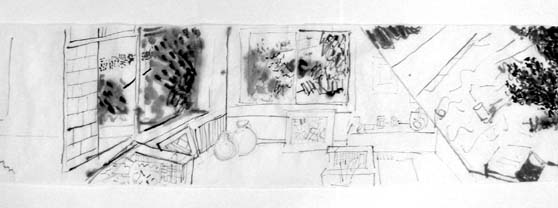
I go inside and look at prints and through windows.
13..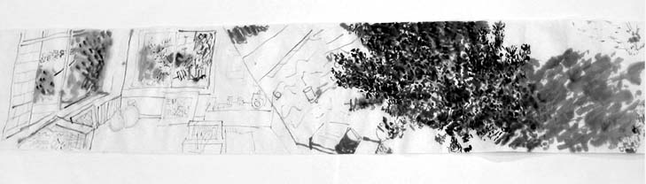
Out the large windows are the tree friends. The most important tree of all is the tree of Mona Saudi's daughter -- the wonderful beautiful Dia.
14..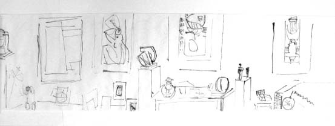
In the living room are more and more stones. The big stones have gone through Saudi's hands and have been transformed into great sculpture.
15..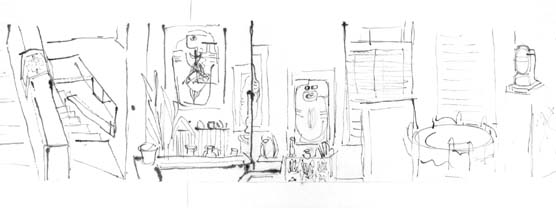
In the extreme right is the sculpture of the ancient Arab Goddess -- El Latt. Mona told me that she carved her blindfolded so that she would not see the shameful acts of Arab Governments.
16..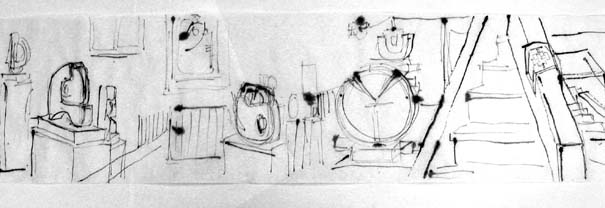
Here I find more stones, amazing sculptures.
17..
Here are more sculptures.
18..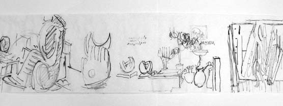
Passing the table full of tools in the drawing studio, I enter her sculpting studio. and I notice the inspirational remarks which she has scribbled on the walls in Arabic -- messages to herselff about stones.
19..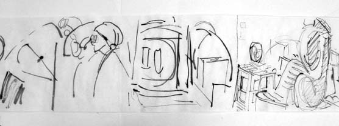
She is there working, examining pieces.
20..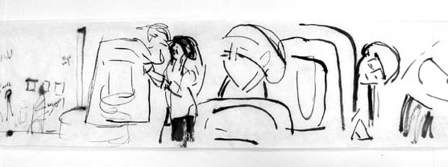
She peaks at them around the corner; she pushes them into place; she examines and thinks.
21..
Hammer and chisel in hand, Saudi begins carving as I continue drawing
22..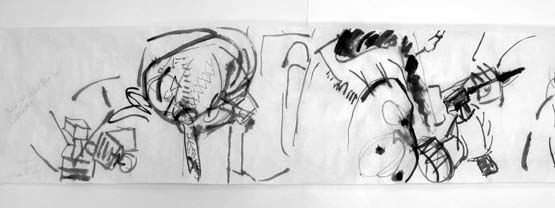
Saudi picks-up an electric drill as I complete 72 feet of ink drawing."
="pointer-events:none;cursor:default;" href="http://www.art.net/">
![[Art on the Net]](/images/artnet_button.gif)